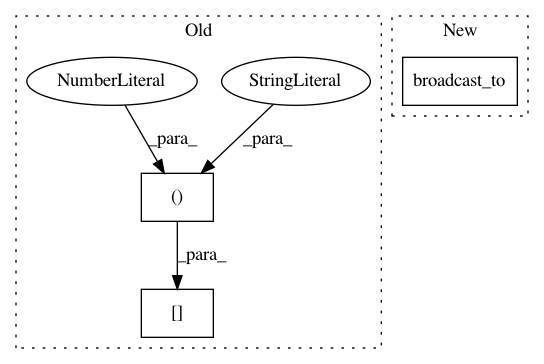

319d76de1d740a0500b9bc321ddc40bf3c032f71,tensorflow_transform/tf_utils.py,,reduce_batch_count_mean_and_var,#Any#Any#,646
Before Change
raise NotImplementedError(
"Mean and var only support SparseTensors with rank 2")
col_count, col_indices = x.dense_shape[1], x.indices[:, 1]
x_sum = tf.math.unsorted_segment_sum(x.values, col_indices, col_count)
x_mean = tf.where(tf.math.greater(x_count, 0),
x_sum / x_count,
tf.zeros_like(x_count, dtype=x.dtype))
After Change
x_mean = tf.where(tf.math.greater(x_count, 0),
x_sum / x_count,
tf.zeros_like(x_count, dtype=x.dtype))
x_minus_mean = tf.sparse.add(x, -tf.broadcast_to(x_mean, tf.shape(x)))
x_minus_mean_sparse = tf.SparseTensor(x.indices,
tf.gather_nd(x_minus_mean, x.indices),
x.dense_shape)
In pattern: SUPERPATTERN
Frequency: 3
Non-data size: 3
Instances
Project Name: tensorflow/transform
Commit Name: 319d76de1d740a0500b9bc321ddc40bf3c032f71
Time: 2021-01-26
Author: zoy@google.com
File Name: tensorflow_transform/tf_utils.py
Class Name:
Method Name: reduce_batch_count_mean_and_var
Project Name: tensorflow/transform
Commit Name: 6c1edd86bac67c4eb25d03e6ab863c3c11fd7fae
Time: 2021-01-29
Author: zoy@google.com
File Name: tensorflow_transform/mappers.py
Class Name:
Method Name: _scale_by_min_max_internal
Project Name: tensorflow/transform
Commit Name: 6c1edd86bac67c4eb25d03e6ab863c3c11fd7fae
Time: 2021-01-29
Author: zoy@google.com
File Name: tensorflow_transform/mappers.py
Class Name:
Method Name: _scale_to_z_score_internal